Transducers & Instrumentation
Module 2 — Kinematics and Kinetics
Christian Medical College Vellore · Department of Bioengineering
Human movement mechanics
Movement is what nervous systems are for
Everything a living organism does to the world, it does by moving.
“We have a brain for one reason and one reason only, and that’s to produce adaptable and complex movements.”
“Movement is the only way you have of affecting the world around you.”
— Daniel Wolpert, The real reason for brains, TEDGlobal 2011
Polycarpa aurata, Komodo. Nick Hobgood, CC BY-SA 3.0, via Wikimedia Commons
Wolpert’s evidence: the sea squirt swims until it finds a rock, attaches permanently, and then resorbs most of its own nervous system. Movement over, brain no longer worth its metabolic cost.
Significant amount of anatomical and physiological resources are dedicated to movement production: joints, muscles, skin, eyes, vestibular system, and the brain.
Various neurological and musculoskeletal conditions can impair healthy movement.
Movement is what nervous systems are for
Everything a living organism does to the world, it does by moving.
“Unhealthy” or “abnormal” movements can be a:
- diagnostic sign — bradykinesia is the mandatory criterion for Parkinson’s disease 1
- early biomarker — gait slowing precedes the diagnosis of mild cognitive impairment; gait abnormality predicts non-Alzheimer’s dementia 2
- disease progression — 6-minute walk distance tracks decline in Duchenne muscular dystrophy; SARA scores track ataxia severity over time 3
- rehabilitation target — movement itself is the intervention, and the outcome (Queen Square programme) 4
1 Postuma et al. Mov. Disord. 30, 1591 (2015).
2 Buracchio et al. Arch. Neurol. 67, 980 (2010); Verghese et al. NEJM 347, 1761 (2002).
3 McDonald et al. Muscle Nerve 41, 500 (2010); 48, 343 (2013); Schmitz-Hübsch et al. Neurology 66, 1717 (2006).
4 Ward et al. J. Neurol. Neurosurg. Psychiatry 90, 498 (2019).
What do we measure in a movement?
Parameters of interest in movements
We are interested in two aspects when dealing with measuring movements:
- Kinematics — the description of motion without considering the forces that cause it
- Kinetics — the study of the forces that cause or accompany motion
We will start the module with kinematics, followed by kinetics.
We will focus on:
- What to measure?
- How to measure?
- Basic instrumentation.
- What the numbers mean?
These numbers must allow us to see beyond our visual observations — more accurate, more precise, and more sensitive information.
Movement kinematics
Describing movements with numbers
Movement description beyond words
Movements are changes in the position of an object of interest over time.
Position is a vector quantity describing the spatial location of an object with respect to a chosen reference frame.
A reference frame is two independent choices: an origin \(O_{A}\) (where \(x=0\) sits) and a basis \(\v{x}_{A}\) (a direction and a length).
With respect to this reference frame \(A\), the position of a particle \(P_1\) and \(P_2\) are given as following, \[ \v{r}_1^{A} = \m{3.2} \qquad \v{r}_2^{A} = \m{-1.5} \]
where \(\v{r}_{1}^{A}, \v{r}_2^{A} \in \mathbb{R}\). The superscript \(A\) says the position is expressed in reference frame \(A\); the subscript \(1\) and \(2\) is the particle number. A subscript on the frame’s own parts — \(O_A\). The numbers are the coefficients of \(\v{r}\) in the basis of that frame, which here is just \(\v{x}_{A}\).
Who decides the reference frame?
Why did we choose one reference frame over another?
Anyone! We choose what is natural and convenient for the problem at hand.
Both the origin and the basis are fair game.
In this course, will only choose a orthonormal basis — basis vectors have unit length and are mutually orthogonal.
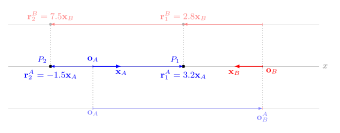
Reference frame \(B\) is translated and rotated with respect to reference frame \(A\). Every point in the 1D space can be represented in either frame, but the numbers will be different.
Changing between reference frames
How do we change between reference frames?
Points \(P_1\) and \(P_2\) in the two reference frames.
\[\begin{matrix} \v{r}_1^{A} = \m{3.2} & \v{r}_2^{A} = \m{-1.5} \\ \v{r}_1^{B} = \m{2.8} & \v{r}_2^{B} = \m{7.5} \end{matrix} \]
How are these numbers related?
Requires us to do vector addition and scaling.
Changing between reference frames
How do we change between reference frames?
Vector Addition and Scaling in 1D:
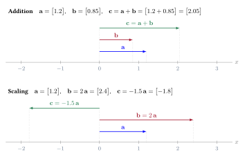
Changing between reference frames
How do we change between reference frames?
Magnitude of a vector: Also referred to as the 2-norm, Euclidean norm, or length of a vector.
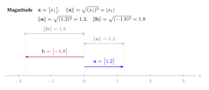
Changing between reference frames
How do we change between reference frames?
Standard Inner Product between two vectors.
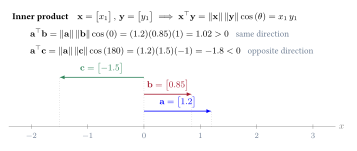
Changing between reference frames
How do we change between reference frames?
Two piece of information to change between reference frames:
Rotation of the basis of the target (\(B\)) w.r.t the base frame (\(A\)). Represented by a rotation matrix \(\v{R}_{B}^{A}\).
Translation of the origin of the target frame (\(B\)) w.r.t the base frame (\(A\)), represented in the base frame. Represented by a translation vector \(\v{o}_{B}^{A}\).
Changing between reference frames
Rotation Matrix
Rotation Matrix: \(\v{R}_{B}^{A} \in \mathbb{R}^{1 \times 1}\) — Represents what the basis vectors of the frame \(B\) (subscript) look like in the frame \(A\) (superscript).
\[ \v{R}_{B}^{A} = \m{\v{x}_{A}^\top \v{x}_{B}} \]
In the above example, \(\v{R}_{B}^{A} = \m{-1}\), because \(\Vert \v{x}_A \Vert = 1\), \(\Vert \v{x}_B \Vert = 1\) and \(\theta = 180\deg\).
Changing between reference frames
Translation Vector
Translation Vector: \(\v{o}_{B}^{A} \in \mathbb{R}^{1 \times 1}\) — Represents the position of the origin of the frame \(B\) (subscript) in the frame \(A\) (superscript). In the above example, \(\v{o}_{B}^{A} = \m{6}\).
The full description of the reference frame \(B\) w.r.t the reference frame \(A\) is given by the pair \(\left( \v{R}_{B}^{A}, \v{o}_{B}^{A} \right)\).
This pair can be used to transform any vector expressed in frame \(B\) to frame \(A\).
Changing between reference frames
Going back and forth between frames
Given the pair \(\left( \v{R}_{B}^{A}, \v{o}_{B}^{A} \right)\), we can transform any vector expressed in frame \(B\) to frame \(A\) using the following equation:
\[ \v{r}_{i}^{A} = \v{R}_{B}^{A} \, \v{r}_{i}^{B} + \v{o}_{B}^{A} \]
Product of a matrix with a vector results in a vector.
In 1D, this product is very simple. We simply multiply the individual elements of the matrix and the vector.
Changing between reference frames
Going back and forth between frames
Given the pair \(\left( \v{R}_{B}^{A}, \v{o}_{B}^{A} \right)\), how do we go the other way around? \(\v{r}_{i}^{A} \mapsto \v{r}_{i}^{B}\).
\[ \v{r}_{i}^{B} = {\v{R}_{B}^{A}}^{-1} \left( \v{r}_{i}^{A} - \v{o}_{B}^{A} \right) = \v{R}_{A}^{B} \v{r}_{i}^{A} + \v{o}_{A}^{B} \]
where, \({\v{R}_{B}^{A}}^{-1} = \v{R}_{A}^{B}\), and \(\v{o}_{A}^{B} = -{\v{R}_{B}^{A}}^{-1}\v{o}_{B}^{A}\).
We obtain \({\v{R}_{B}^{A}}^{-1}\) by inverting the single number in the matrix. So, for the above example, we have, \[ {\v{R}_{B}^{A}}^{-1} = \v{R}_{A}^{B} = \m{\frac{1}{-1}} = \m{-1} \qquad \v{o}_{A}^{B} = -{\v{R}_{B}^{A}}^{-1} \v{o}_{B}^{A} = -\m{-1}\m{6} = \m{6} \]
Changing between reference frames
Going back and forth between frames \(A\) and \(B\)
Given: \(\v{R}_{A}^{B} = \m{-1}\) and \(\v{o}_{A}^{B} = \m{6}\).
Going from \(A\) to \(B\).
\[ P_1: \m{3.2} = \m{-1} \m{2.8} + \m{6} = \m{-2.8} + \m{6} = \m{3.2} \] \[ P_2: \m{-1.5} = \m{-1} \m{7.5} + \m{6} = \m{-7.5} + \m{6} = \m{-1.5} \]
Going from \(B\) to \(A\).
\[ P_1: \m{2.8} = \m{-1} \m{3.2} + \m{6} = \m{-3.2} + \m{6} = \m{2.8} \] \[ P_2: \m{7.5} = \m{-1} \m{-1.5} + \m{6} = \m{1.5} + \m{6} = \m{7.5} \]
Changing between reference frames
Now a third reference frame!
Let’s try a problem by brining in a third reference frame \(C\).
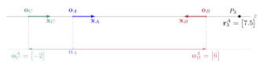
- Find the pair \(\left( \v{R}_{C}^{A}, \v{o}_{C}^{A} \right)\). \(\longrightarrow \m{1.0}, \m{-2}\)
- Find the pair \(\left( \v{R}_{A}^{C}, \v{o}_{A}^{C} \right)\). \(\longrightarrow \m{1.0}, \m{2}\)
- Find \(\v{r}_{3}^{B}\). \(\longrightarrow \m{-1.5}\)
- Find \(\v{r}_{3}^{C}\). \(\longrightarrow \m{9.5}\)
- Find the pair \(\left( \v{R}_{C}^{B}, \v{o}_{C}^{B} \right)\). \(\longrightarrow \m{-1.0}, \m{8}\)
- Find the pair \(\left( \v{R}_{B}^{C}, \v{o}_{B}^{C} \right)\). \(\longrightarrow \m{-1.0}, \m{8}\)
Describing movements with numbers in 2D
Movements description in 2D
In the 2D real plane, we can represent the position of individual points using two numbers after we choose a reference frame — origin and basis vectors.
Reference frame \(A\): origin \(\v{o}_{A}\) and orthonormal basis \(\{ \v{x}_A, \v{y}_A \}\), where \(\Vert \v{x}_{A} \Vert = \Vert \v{y}_{A} \Vert = 1\) and \(\v{x}_{A}^\top \v{x}_{B} = 0\).
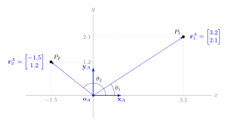
Points in the plane are represented as column vectors \(\v{r}_i^{A} \in \mathbb{R}^2\) w.r.t to the reference frame \(A\). \[ \v{r}_{1}^{A} = \m{ r_{11}^A \\ r_{12}^A} = \m{ \v{x}_A^\top \v{r}_1^{A} \\ \v{y}_A^\top \v{r}_1^{A}} = \m{ \Vert \v{x}_A \Vert \Vert \v{r}_1^{A} \Vert \cos \left( \theta_1 \right) \\ \Vert \v{y}_A \Vert \Vert \v{r}_1^{A} \Vert \sin \left( \theta_1 \right)} = \m{ \Vert \v{r}_1^{A} \Vert \cos \left( \theta_1 \right) \\ \Vert \v{r}_1^{A} \Vert \sin \left( \theta_1 \right)} \]
Describing movements with numbers in 2D
Vector addition in 2D
Vector addition in \(\mathbb{R}^2\)
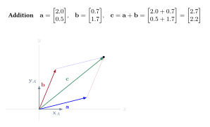
Describing movements with numbers in 2D
Vector scaling in 2D
Vector scaling in \(\mathbb{R}^2\)
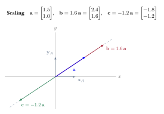
Describing movements with numbers in 2D
Movements description in 2D
The representation of \(P_1\) and \(P_2\) in reference frame \(A\) is \(\v{r}_{1}^{A} = \m{3.2 \\ 2.1}\) and \(\v{r}_{1}^{A} = \m{-1.5 \\ 1.2}\), respectively.
The following is what these numbers mean:
\[ \v{r}_{1}^{A} = 3.2 \v{x}_A + 2.1 \v{y}_A \qquad \qquad \v{r}_{2}^{A} = -1.5 \v{x}_A + 1.2 \v{y}_A\]
Different reference frames in 2D
Reference frame sharing the origin
Consider a second reference frame \(B\) shown in the figure. Both these reference frames share the same origin, but are rotated with respect to each other.
Note: \(\Vert \v{x}_{B} \Vert = \Vert \v{y}_{B} \Vert = 1\) and \(\v{x}_{B}^\top\v{y}_{B} = 0\).
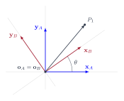
The rotation of frame \(B\) with respect to frame \(A\) is given by a \(2 \times 2\) real matrix \(\v{R}_{B}^{A} \in \mathbb{R}^{2 \times 2}\).
\[ \v{R}_{B}^{A} = \m{\v{x}_{B}^{A} & \v{y}_{B}^{A}} = \m{\v{x}_{A}^\top \v{x}_{B} & \v{x}_{A}^\top \v{y}_{B} \\ \v{y}_{A}^\top \v{x}_{B} & \v{y}_{A}^\top \v{y}_{B}}\]
\[ \v{R}_{B}^{A} = \m{ \cos\left( \theta \right) & -\sin\left( \theta \right) \\ \sin\left( \theta \right) & \cos\left( \theta \right) }\]
Representation of \(P_1\) in references frames \(A\) and \(B\) are \(\v{r}_{1}^{A}\) and \(\v{r}_{1}^{B}\), respectively. \[ \v{r}_{1}^{A} = \m{r_{11}^{A} \\ r_{12}^{A}} \qquad \v{r}_{1}^{B} = \m{r_{11}^{B} \\ r_{12}^{B}} \qquad \v{r}_{1}^{A} = \v{R}_{B}^{A} \, \v{r}_1^{B} \]
The linear algebra we need
Vectors, matrices and a few of their operations
Vectors \(\mathbb{R}^n\) are a order collection of real numbers \(\mathbb{R}\). We will also write them as a column and call them column vectors.
\[ \v{x} = \m{x_1 \\ x_2 \\ \vdots \\ x_n} \]
The transpose operation changes a column vector to a row vector and vice versa.
\[ \v{x}^\top = \m{x_1 & x_2 & \cdots & x_n} \qquad \qquad \left(\v{x}^\top\right)^\top = \v{x} \]
Addition and scaling rules and their geometric interpretation are the same as that in \(\mathbb{R}^2\).
2-Norm: Consider a vector \(\v{x} \in \mathbb{R}^n\). \(\Vert \v{x} \Vert = \sqrt{\sum_{i=1}^n x_i^2 }\)
Standard inner product: Consider two vectors, \(\v{x}, \v{y} \in \mathbb{R}^n\).
\[ \v{x}^\top\v{y} = \m{x_1 & x_2 & \cdots & x_n}\m{y_1 \\ y_2 \\ \vdots \\ y_n} = \sum_{i=1}^n x_iy_i = \Vert \v{x} \Vert \Vert \v{y} \Vert \cos \left(\theta\right)\]
where, \(\theta\) is the angle between \(\v{x}\) and \(\v{y}\).
The linear algebra we need
Vectors, matrices and a few of their operations
Matrices \(\mathbb{R}^{p \times q}\) are a rectangular arrangement of numbers \(\mathbb{R}\).
\[ \v{A} = \m{a_{11} & a_{12} & \cdots & a_{1q} \\ a_{21} & a_{22} & \cdots & a_{2q} \\ \vdots & \vdots & \ddots & \vdots \\ a_{p1} & a_{p2} & \cdots & a_{pq}} \in \mathbb{R}^{p \times q}\]
where, \(a_{ij}\) is the component of the matrix in the \(i^{th}\) row and \(j^{th}\) column. When \(p = q\), \(\v{A}\) is a square matrix, else it’s a rectangular matrix.
With this definition, we can think of column vectors as a matrix with a single column, and a row vector as a matrix with a single row.
We can also think of the matrix \(\v{A}\) as a row of column vectors from \(\mathbb{R}^p\).
\[ \v{A} = \m{\v{a}_{1} & \v{a}_{2} & \cdots & \v{a}_{q}} \in \mathbb{R}^{p \times q}\]
where, \(\v{a}_{i} \in \mathbb{R}^p\) is the \(i^{th}\) column of \(\v{A}\).
Transpose of a matrix switches the rows and columns. \(\v{A}^\top \in \mathbb{R}^{q \times p}\).
\[ \v{A}^\top = \m{a_{11} & a_{21} & \cdots & a_{p1} \\ a_{12} & a_{22} & \cdots & a_{p2} \\ \vdots & \vdots & \ddots & \vdots \\ a_{1q} & a_{2q} & \cdots & a_{pq}} \in \mathbb{R}^{q \times p}\]
The linear algebra we need
Vectors, matrices and a few of their operations
Matrix-vector product Let \(\v{A} \in \mathbb{R}^{p \times q}\) and \(\v{x} \in \mathbb{R}^{q \times 1}\). We can define this product as the following,
\[ \mathbb{R}^{p} \ni \v{y} = \v{A}\v{x} = \m{a_{11} & a_{12} & \cdots & a_{1q} \\ a_{21} & a_{22} & \cdots & a_{2q} \\ \vdots & \vdots & \ddots & \vdots \\ a_{p1} & a_{p2} & \cdots & a_{pq}} \m{x_1 \\ x_2 \\ \vdots \\ x_q} = \m{\sum_{i=1}^qa_{1i} x_i \\ \sum_{i=1}^qa_{2i} x_i \\ \vdots \\ \sum_{i=1}^qa_{qi} x_i}\]
We can also view \(\v{A}\v{x}\) as the following,
\[ \v{y} = \v{A}\v{x} = \m{\v{a}_{1} & \v{a}_{2} & \cdots & \v{a}_{q}} \m{x_1 \\ x_2 \\ \vdots \\ x_q} = \sum_{i=1}^q x_i \v{a}_{i}\]
Matrix-Matrix product Let \(\v{A} \in \mathbb{R}^{p \times q}\) and \(\v{B} \in \mathbb{R}^{q \times r}\). Then we can define the product of these two matrices as the following,
\[ \mathbb{R}^{p \times r} \ni \v{C} = \m{c_{11} & c_{12} & \cdots & c_{1r} \\ c_{21} & c_{22} & \cdots & c_{2r} \\ \vdots & \vdots & \ddots & \vdots \\ c_{p1} & c_{p2} & \cdots & c_{pr}} = \v{A}\v{B} = \m{a_{11} & a_{12} & \cdots & a_{1q} \\ a_{21} & a_{22} & \cdots & a_{2q} \\ \vdots & \vdots & \ddots & \vdots \\ a_{p1} & a_{p2} & \cdots & a_{pq}} \m{b_{11} & b_{12} & \cdots & b_{1r} \\ b_{21} & b_{22} & \cdots & b_{2r} \\ \vdots & \vdots & \ddots & \vdots \\ b_{q1} & b_{p2} & \cdots & b_{qr}} \qquad c_{ij} = \sum_{k} a_{ik}b_{kj}\]
Matrix multiplication \(\v{A}\v{B}\) is allowed if only if the number of columns of \(\v{A}\) equals the number of columns of \(\v{B}\).
Different reference frames in 2D
Let’s do an example
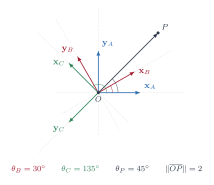
Find the following.
- \(\v{r}_{P}^{A}\). \(\longrightarrow \m{\sqrt{2} \\ \sqrt{2}}\)
- \(\v{R}_{B}^{A}\). \(\longrightarrow \frac{1}{2}\m{\sqrt{3} & -1 \\ 1 & \sqrt{3}}\)
- \(\v{R}_{A}^{B}\). \(\longrightarrow \frac{1}{2}\m{\sqrt{3} & 1 \\ -1 & \sqrt{3}}\)
- \(\v{R}_{C}^{A}\). \(\longrightarrow \frac{1}{\sqrt{2}}\m{-1 & -1 \\ 1 & -1}\)
- \(\v{R}_{A}^{C}\). \(\longrightarrow \frac{1}{\sqrt{2}}\m{-1 & 1 \\ -1 & -1}\)
- \(\v{r}_{P}^{B}\). \(\longrightarrow \frac{1}{2}\m{\sqrt{6}+\sqrt{2} \\ \sqrt{6}-\sqrt{2}}\)
- \(\v{r}_{P}^{C}\). \(\longrightarrow \m{0 \\ -2}\)
- \(\v{R}_{B}^{C}\). \(\longrightarrow \frac{1}{4}\m{\sqrt{2}-\sqrt{6} & \sqrt{6}+\sqrt{2} \\ -\sqrt{6}-\sqrt{2} & \sqrt{2}-\sqrt{6}}\)
- \(\v{R}_{C}^{B}\). \(\longrightarrow \frac{1}{4}\m{\sqrt{2}-\sqrt{6} & -\sqrt{6}-\sqrt{2} \\ \sqrt{6}+\sqrt{2} & \sqrt{2}-\sqrt{6}}\)
Different reference frames in 2D
Let’s now shift the origin
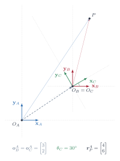
What is \(\v{R}_{B}^{A}\)? \(\longrightarrow \m{1 & 0 \\ 0 & 1} = \v{I}\)
What is \(\v{r}_{P}^{B}\)? \(\longrightarrow \m{1 \\ 4}\)
What is \(\v{R}_{C}^{B}\)? \(\longrightarrow \m{\frac{\sqrt{3}}{2} & -\frac{1}{2} \\ \frac{1}{2} & \frac{\sqrt{3}}{2}}\)
What is \(\v{r}_{P}^{C}\)? \(\longrightarrow \m{1 \\ 4}\)
How do we change between references frames \(A\) and \(C\)?
We need the rotation and the translation. \(\left( \v{R}_{B}^{A}, \v{o}_{B}^{A}\right)\).
\[ \v{r}_{P}^{A} = \v{R}_{B}^{A} \v{r}_{P}^{B} + \v{o}_{B}^{A} \] \[ \v{r}_{P}^{B} = {\v{R}_{B}^{A}}^{-1} \left( \v{r}_{P}^{A} - \v{o}_{B}^{A} \right) \]
\[\implies \v{R}_{A}^{B} = {\v{R}_{B}^{A}}^{-1} = {\v{R}_{B}^{A}}^{\top} \qquad \v{o}_{A}^{B} = -{\v{R}_{B}^{A}}^{\top}\v{o}_{B}^{A}\]
Different reference frames in 2D
Homogenous Coordinates and Transformation
\[ \v{r}_{P}^{A} = \v{R}_{B}^{A} \v{r}_{P}^{B} + \v{o}_{B}^{A} \qquad \qquad \v{r}_{P}^{B} = {\v{R}_{B}^{A}}^{\top} \left( \v{r}_{P}^{A} - \v{o}_{B}^{A} \right) \]
Note that rotation is represented by a matrix multiplication operation, while translation is represented by vector addition.
Homogenous coordinations and transformation
We can express this entire transformation through a multiplication operation if we choose the homogenous coordinate representation, and we can represent both translation and rotation in a single matrix – homogenous transformation matrix.
Let \(\tilde{\v{r}}_{P}^{C}\) be the homogenous coordinates of the point \(P\) in reference frame \(C\): \(\quad \tilde{\v{r}}_{P}^{C} = \m{\v{r}_{P}^{C} \\ 1}\).
The homogenous transformation matrix representing frame \(C\) w.r.t to \(A\) is given by,
\[ \v{H}_{C}^{A} = \m{\v{R}_{C}^{A} & \v{o}_{C}^{A} \\ \v{0} & 1}\]
We can obtain the homogenous representation of \(P\) in \(A\) from \(\v{r}_{P}^{C}\) as follows,
\[ \tilde{\v{r}}_{P}^{A} = \v{H}_{C}^{A} \tilde{\v{r}}_{P}^{C} \quad \implies \quad \tilde{\v{r}}_{P}^{C} = \v{H}_{A}^{C} \tilde{\v{r}}_{P}^{A} = {\v{H}_{C}^{A}}^{-1} \tilde{\v{r}}_{P}^{A}\]
What is \({\v{H}_{C}^{A}}^{-1}\)? \(\longrightarrow \m{{\v{R}_{C}^{A}}^\top & -{\v{R}_{C}^{A}}^\top \v{o}_{C}^{A} \\ \v{0} & 1}\)
Different reference frames in 3D
Ideas from 2D generalize to 3D
Each coordinate is an inner product: drop a perpendicular onto that axis, and the length you cut off is \(\v{x}_{A}^\top \v{r}_{P}^{A}\).
Different reference frames in 3D
Ideas from 2D generalize to 3D
Two reference frames, rotated and translated with respect to each other. The same point \(P\) — two sets of numbers. Switch which frame the world is drawn in: the picture changes, the numbers do not.
Different reference frames in 3D
Ideas from 2D generalize to 3D
The representation of a reference frame \(B\) w.r.t. \(A\) requires the rotation matrix \(\v{R}_{B}^{A}\) and the translation of the origin \(\v{o}_{B}^{A} \in \mathbb{R}^3\).
\[ \v{R}_{B}^{A} = \m{ \v{x}_{A}^\top \v{x}_B & \v{x}_{A}^\top \v{y}_B & \v{x}_{A}^\top \v{z}_B \\ \v{y}_{A}^\top \v{x}_B & \v{y}_{A}^\top \v{y}_B & \v{y}_{A}^\top \v{z}_B \\ \v{z}_{A}^\top \v{x}_B & \v{z}_{A}^\top \v{y}_B & \v{z}_{A}^\top \v{z}_B} \in \mathbb{R}^{3 \times 3}\]
The transformation between \(A\) and \(B\) is given by the following,
\[ \v{r}_{P}^{A} = \v{R}_{B}^{A} \v{r}_{P}^{B} + \v{o}_{B}^{A} \qquad \qquad \v{r}_{P}^{B} = {\v{R}_{B}^{A}}^{\top} \left( \v{r}_{P}^{A} - \v{o}_{B}^{A} \right) \]
In the homogenous representation, we have \(\tilde{\v{r}}_{P}^{B} = \m{\v{r}_{P}^{B} \\ 1}\). And the homogenous transformation matrix \(\v{H}_{B}^{A} \in \mathbb{R}^{4 \times 4}\).
\[\tilde{\v{r}}_{P}^{A} = \v{H}_{B}^{A} \tilde{\v{r}}_{P}^{B} \quad \implies \quad \tilde{\v{r}}_{P}^{B} = \v{H}_{A}^{B} \tilde{\v{r}}_{P}^{A} = {\v{H}_{B}^{A}}^{-1} \tilde{\v{r}}_{P}^{A}\]
Representing kinematics of rigid bodies
How many numbers do we need?
A rigid body is a collection of points whose relative spatila location with respect to each other does not change no matter the forces acting on these points.
Useful approximation for many applications, simplifying representing/analysing kinematics of real objects.
We need a total of 6 numbers to represent its position and orientation w.r.t to a reference frame.
\[ \text{Rigid body in 3D space} \longrightarrow \left( \alpha, \beta, \gamma, x, y, z\right)\]
\(\left(\alpha, \beta, \gamma\right)\) represent the orientation of the body in space, and \(\left(x, y, z\right)\) represents, typically, the position of some point in the rigid body. Once we know these 6 numbers, we know (i.e. can compute) the location of every point in the rigid body.
One of many ways to describe rigid body kinematics in 3D space; all representations we will need 6 numbers.
These numbers are also referred as degrees-of-freedom (DOFs).
Representing kinematics of rigid bodies
How many numbers do we need?
Representing kinematics of connected rigid bodies
How many numbers connected rigid bodies?
If we have two independent rigid bodies in space, how many number do we need to describ their kinemaics in 3D space? 12
When we say two rigid bodies are connected together, we mean that the two bodies have constraints on how they can move with respect to each other.
Reduces the numbers we need to describe the kinematics of the connection rigid bodes to be lower than 12.
Each constraint on the movements of the two connected bodies, reduces the number of DOFs by 1.
\[\text{DOFs of two connected rigid bodies} = 12 - \text{No. of kinematic constraints}\]
We will refer to this connection as joint, and we can talk about the DOFs of a joint.
\[\text{DOFs of a joint} = 6 - \text{No. of kinematic constraints}\]
The body as connected rigid bodies
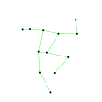
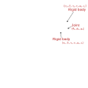
Full body kinematics: Track one body segment and the joint angles of the connected segments.
Individual joint kinematics: Track only the segments connected at the joints.
Measuring Kinematics
How do we measure kinematics?
General approach: track all 6DOFs of each limb segment \(\longrightarrow\) derive the individual joints variables.
- Pros: Full characterisation; Suitable for for complex movement behaviors (e.g. gait analysis, upper-limb reaching, object manipulation, etc.).
- Cons: Too much information for simple movements (e.g. knee flexion/extension, elbow range of motion.); Complex, expensive tools required.
Joint level approach: track specific joint variables of interest.
- Pros: Simple, compact tools. Focused, relevant information for simple movements.
- Cons: Unsuitable for complex movements.
We will explore sensing tools for both approaches.
- Camera-based motion tracking with markers (standard &. fiducial).
- Inertial measurement units
- Optical and magnetic encoders
Camera-based movement tracking

Marker-based motion-capture suit. Image: cgicoffee.com
- Each marker is treated as a dot or point in space.
- \((x_i, y_i, z_i)\) position of the \(i^{th}\) marker estimated from the cameras in a lab-fixed reference frame.
\[ \left(x_i, y_i, z_i \right)_{i=1}^{M} \longrightarrow \left(x_j, y_j, z_j, \alpha_j, \beta_j, \gamma_j \right)_{j=1}^{L} \longleftarrow \left(\theta_k, \phi_k, \chi_k \right)_{k=1}^{J}\]
Camera-based movement tracking
A camera captures the spatial distribution of light arriving from the environment — it records the direction from which light arrives, not the distance it has travelled.
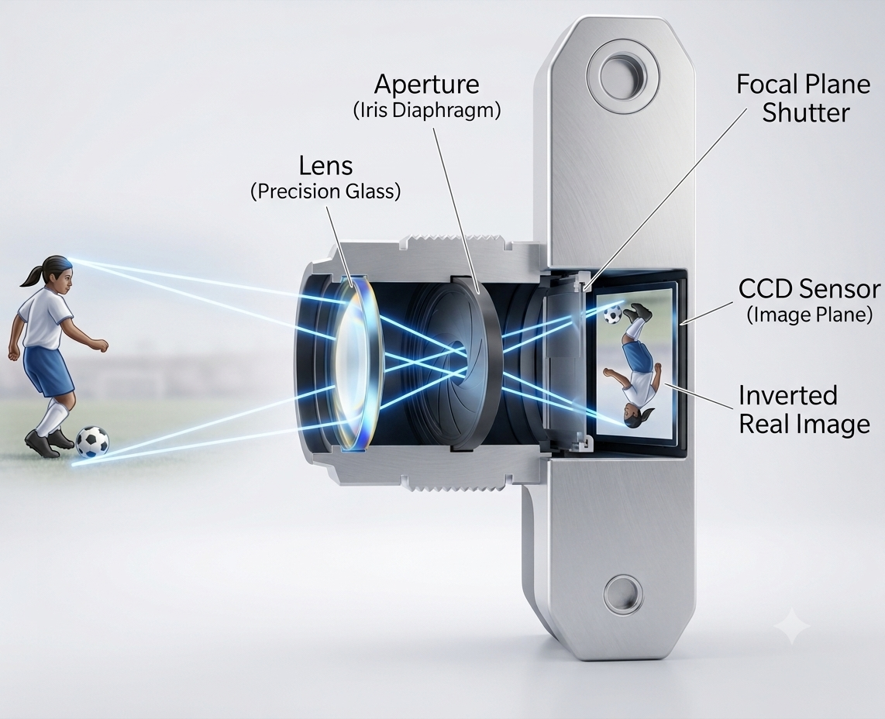
Camera optics produces captured by a image of the work — CCD sensor for digital cameras or a film in traditional film cameras.
An image \(I\left(x, y\right)\) is a 2D distribution of brightness of light. For a cameras, the 2D surface is a rectangular region \(\Omega\). \[ I: \Omega \subset \mathbb{R}^2 \mapsto \mathbb{R}_{+}; \quad \Omega \ni \left(x, y\right) \mapsto I\left(x, y\right) \in \mathbb{R}_{+} \]
Image intensity \(I\left(x, y\right)\) at any location \(\left(x, y\right)\) is determined by the amount of light entering the camera through its optical system that directs the light to the image sensor.
Geometry of the optics determines the mapping of the spatial location of a source of light in the world \(\left(x_w, y_w, z_w\right)\) to a spatial location of the image \(\left(x, y\right)\).
We will primarily focus on the geometry of the optics for the purpose of kinematics tracking using camera image.
Camera-based movement tracking
Physics of a Pinhole Camera
A useful and simplified model of the geometry of a camera’s optics is provided by a pinhole camera.
A box, with an infinitesimly small hole that a single ray from each point to enter the box.
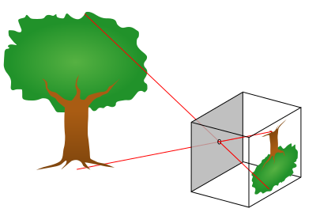
Produces an inverted image of the world on the back wall.
Camera-based movement tracking
Physics of a Pinhole Camera
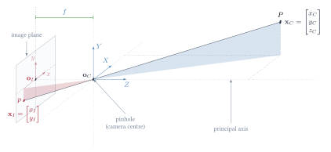
\(P\) in space has coordinates \(\v{x}_C = \m{x_C & y_C & z_C}^\top \in \mathbb{R}^2\) w.r.t. to the camera reference frame.
\(p\) is the corresponding point in the image with coordinates \(\v{x}_I = \m{x_I & y_I}^\top \in \mathbb{R}^2\) w.r.t. to the image reference frame.